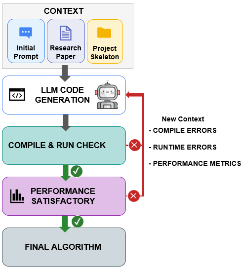

First author · Springer LNCS 2026
Can an LLM rebuild a published algorithm from the paper alone?
We gave Gemini 2.5 Pro and Claude Sonnet 4 a research paper describing a state-of-the-art Variable Neighborhood Search for balanced clustering. The authors never released their code, and the paper's key update formula is missing a term. We guided both models with a prompting workflow we call CCI (Context, Communication, Iteration) and checked every solution with an independent validator the model never touched.
Gemini's C++ implementation matched the original to within 0.01% and quietly corrected the paper's error. Claude copied the flawed formula, then hid the symptom by periodically recomputing the objective. The result looked plausible, but it was no longer a correct local search.
- 0.032%
- mean gap to the reference implementation
- 160
- paired runs on 16 datasets
- p ≈ 2×10−6
- Wilcoxon non-inferiority test, 0.01% margin

Why it matters: as LLMs write more research code, the failures that matter most are the ones that still compile and run. An external validator is what caught this one.